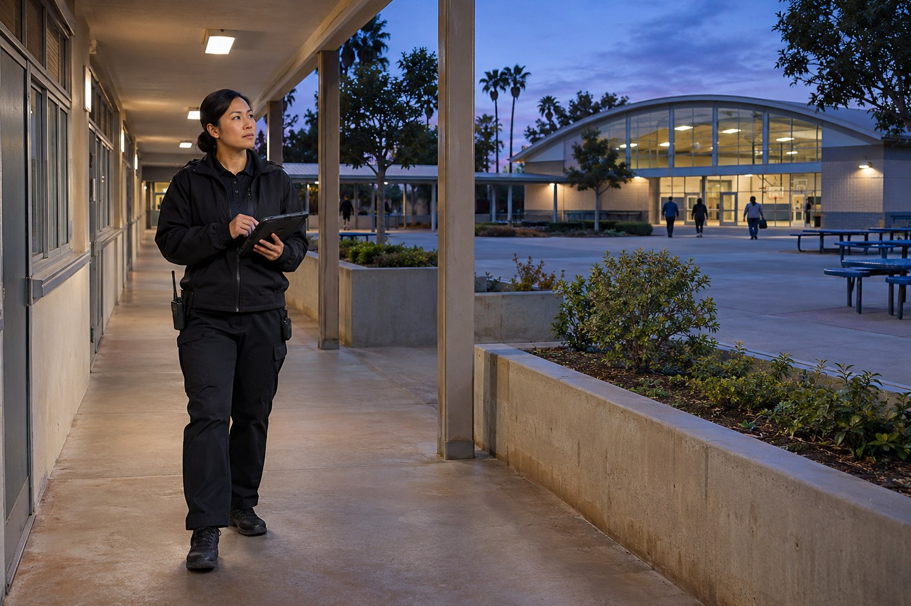

The Last Bell Rings and Your School Campus Becomes a Different Place

The last bell rings, the buses pull away, and the campus exhales. For about twenty minutes it still feels like a school in the ordinary sense, full of voices, backpacks, and car doors. Then the light changes. Most classrooms go dark. Hallways that were crowded at noon sit empty. The gym lights come on for a game, music drifts from a rehearsal room, and a community group unlocks a gate for an evening meeting. The same campus is now two places at once, one busy and bright, the other quiet, unoccupied, and largely unseen.
That split is where the trouble lives. During the school day, thousands of eyes do an invisible kind of work. Teachers notice a stranger. Students notice an open door that is usually closed. Office staff know who belongs and who does not. After dismissal, that shared awareness thins out fast, while the campus itself stays full of things worth taking, breaking, or hiding among. A school in Los Angeles does not close when classes end. It changes, and the people who mean it harm understand the change as well as anyone.
Half the Campus Is Hosting, the Other Half Is Empty
Evening life on a campus is real and worth protecting. There are games under the lights, plays and concerts taking shape in rehearsal, adult classes, youth leagues, and neighborhood groups using fields and halls. California law, through the Civic Center Act, allows community use of school facilities, so this evening traffic is not an accident or a loophole. It is part of what a public campus is for. Neighbors, parents, players, and visitors have legitimate reasons to be there well after dark.
Legitimate traffic is also what makes illegitimate traffic hard to spot. On a game night, a stranger near the parking lot draws no attention at all. A person crossing a dark quad can look like a parent taking a shortcut to the gym. Someone lingering near a side gate can pass for a volunteer, a relative, or a renter setting up in another wing. While one part of campus is full of people, another part can sit empty for hours, with unlocked transitions between the two that nobody is watching closely.
The empty wings hold more than desks. Equipment rooms store tools and technology. Classrooms hold laptops, projectors, and instruments that represent years of fundraising and budget fights. Athletic areas hold gear that is expensive, portable, and hard to trace once it is gone. A music room full of instruments is, to the students who use them, the heart of the school. To someone walking an unlit corridor at night, it is a room full of valuable objects behind an ordinary door, in a building everyone assumes is being watched more closely than it is.
The Numbers Point to the Hours Nobody Is There
The National Center for Education Statistics report on crime and safety in U.S. public schools for the 2021 to 2022 school year documents recorded theft and vandalism as part of the school safety picture. The report does not establish the share of incidents occurring after hours or when buildings are unoccupied. Decisions about evening coverage therefore need to reflect a campus event schedule, access conditions and local incident records.
Vandalism deserves its own weight in that picture, because it is often treated as a nuisance rather than a serious loss. Broken windows, damaged doors, defaced walls, and wrecked restrooms greet students the next morning before any lesson begins. Younger students absorb the message quickly. A campus that looks uncared for overnight starts to feel uncared for in general, even when teachers are doing everything they can inside their classrooms.
Cleanup and repair pull money and staff time away from the work the building exists for, and a school that gets hit repeatedly begins to plan around damage instead of around learning.
Burglary carries a different kind of harm. A stolen laptop cart is not only a replacement bill. It is student work gone, lessons rebuilt from nothing, and technology that a department may wait months to see again. Stolen instruments can end a season for students who have practiced all year. Theft from equipment rooms and storage areas is often discovered late, sometimes days later, when nobody can say with confidence which evening, which event, or which open gate the loss belongs to. That uncertainty is part of the damage. It spreads suspicion across everyone who used the campus after hours, including the community groups the school wants to welcome.
Neighbors See the Campus After Dark Too
The streets around a school do not stop paying attention at dismissal. Neighbors report strangers cutting through campus grounds at night, figures crossing fields, gathering in covered walkways, or slipping through gaps along fences. Each report might be minor on its own. Together, they tell administrators something important about how the campus is being used when staff are gone, and about how safe the surrounding blocks feel living next to it.
How schools can review after hours campus coverage
A campus security review should start with an event schedule and a map of authorized access. Which gates and buildings are used by evening groups? Which spaces should remain secured? Who confirms that rooms and entrances are closed after an event?
Administrators can define visitor check in procedures, incident reporting responsibilities and the handoff between school employees, event organizers and contracted security personnel. A plan needs to accommodate authorized community use without treating every visitor as a threat.
Coverage decisions should reflect the actual campus, event traffic and legal responsibilities. A guard service can be part of that plan, but supervision, lighting, locks and emergency protocols must work together.
Those reports come with a cost even when nothing is stolen. A neighbor who calls about people on campus at midnight is a neighbor whose confidence in the school is being tested. Community use cuts both ways. The same openness that lets families gather for a game also asks nearby households to live with noise, traffic, and strangers near their homes after dark. When cutting through, loitering, and late night activity become routine, goodwill erodes, and the school finds itself answering for hours it barely staffs and spaces it cannot see.
There is also the risk that an after hours presence turns into something worse than trespassing. An empty wing is a place to hide. A dark field is a place to gather unobserved. Fires, confrontations, and damage to outdoor structures tend to begin in exactly the spaces a busy evening event leaves unwatched on the other side of campus. By the time a custodian, coach, or neighbor notices, the people involved are often gone, and the school is left with the repair bill and a report that describes a problem already finished.
A Campus Is Hardest to Know at Night
Part of the difficulty is sheer size. A school is not one building with one door. It is a small town of classrooms, portables, gyms, locker rooms, kitchens, storage yards, and parking lots, spread across ground that was designed for daytime movement. Knowing that campus at 2 pm is easy. Knowing it at 9 pm, with three separate events running and four wings dark, is a different matter entirely. Doors opened for one group stay open. Gates used by one team become paths for everyone. The map of who is supposed to be where blurs a little more with every hour past dismissal.
That blurring is what makes the after hours problem so persistent for schools across the greater Los Angeles area. The campus is being generous and exposed at the same time. It hosts the community in one wing while holding valuable, fragile, and deeply personal things in another. It cannot simply go dark, because its evenings matter. It cannot honestly call itself secure either, when so much of the ground sits empty while crowds come and go nearby.
This is the setting Paradigm Security Services works in, and it explains why the last bell deserves as much attention as the first one. The students will be back in the morning. What they find waiting for them, an intact campus or another round of damage and loss, is decided during the hours when almost nobody from the school is there to see it decided.
nseen hours unseen risks the case for after hours school security
Discuss your project
Paradigm Security Services can discuss school campus security staffing for after hours activities and scheduled events. Request a Quote.